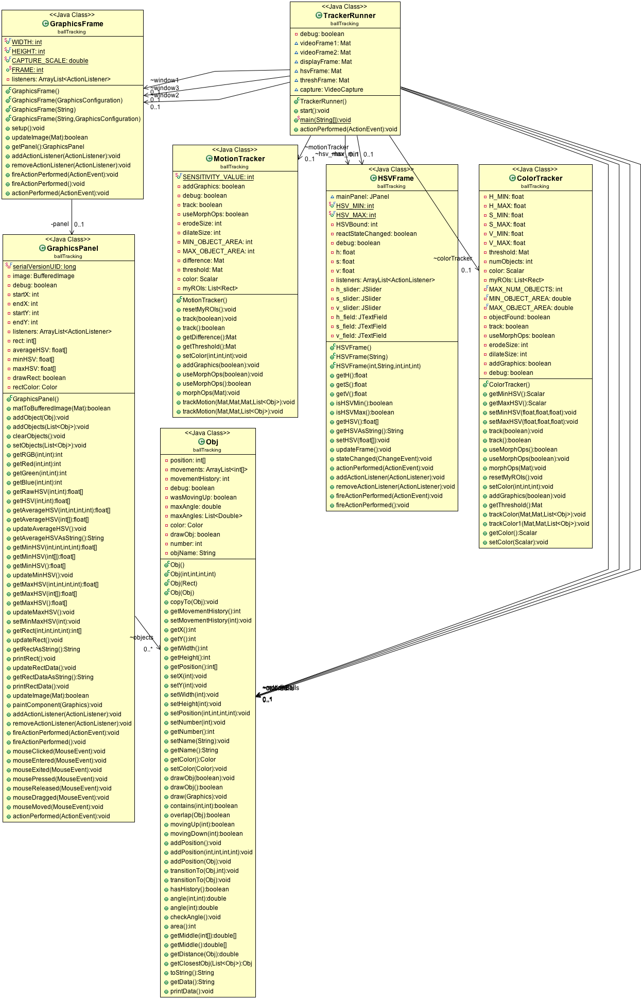

Objective of the Project and Rationale
This project aimed to assist in the development of the shooting skill in the game of basketball. The arc of a shot must be in a specific range to maximize the area of the rim while using as little effort as possible. This solution passively tracks the angle of trajectory of each shot which will allow immediate and objective results during training. Color and motion tracking are both quick and relatively effective algorithms at recognizing and tracking objects.
UML Diagram
{kind=link}
Click here (or on the image above) for a larger image of the UML Diagram of the project.
Record of Tasks
The following is a general chronology of the development of this project. For a more thorough delineation of the project, take a look at the commit history on the GitHub page.
February 5-10: Began project, learned about the OpenCV library with facial recognition, motion tracking, and interfacing with the webcam or video files.
February 10-20: Worked on GUI, including live updating frames that display tracked objects. Learned and implemented a color tracker.
February 20-March 5: Improved accuracy of motion and color trackers. Implemented multi-object tracking capabilities.
March 5-15: Created object classes, implemented trajectory analysis of different objects including angle of object motion.
Design Overview
This project takes advantage of two common and straightforward methods of object tracking: color tracking and motion tracking. When the program is run, the tracker runner instantiates a color tracker, a motion tracker, graphics windows to view the tracking, and an ArrayList of objects to be tracked. The runner then begins to process frames entered (either through a webcam live or from a video file), and passes the frames off (as well as the lists of objects) to the tracker objects for analysis. Each tracker will then update the list of objects according to the type of tracking. In the color tracker, the contours around each set of pixels that fit the color characteristics are traced, and in the motion tracker, the contours around each set of changed pixels (from one frame to the next) are traced.
Once the trackers finish processing the data, the runner processes the list of potential objects and selects the object that is most likely the same object as from previous frames. The object's location is then updated, and the trajectory of the object is updated.
For the GUI, there are several windows that allow for user input and relay information about the object tracking. The primary window is the live graphics window in which the video stream is displayed with bounding rectangles around the objects being tracked. There are two other graphics windows that display the black and white threshold images for both the motion tracking and color tracking. In these threshold windows, the white pixels demonstrate areas of interest for the tracker, which are then grouped into sets of pixels and bounded by a “region of interest” rectangle. Two other windows are used for user input for the color tracker. Each window has three sliders that allow users to control the minimum and maximum hue, saturation, and value (HSV, also known as HSB for brightness instead of value) for the objects being tracked. For ease of use, the user may also click and drag on the video stream window to select a range of pixel values, but the HSV windows are useful to fine-tune the color tracker.
Development
This project uses the OpenCV library and many of its image-processing capabilities. Most of the interesting algorithms used in the project are centered around the tracking capabilities. For both trackers, a threshold image is calculated from input images. In the color tracker, each pixel is checked to see if it falls within the minimum and maximum HSV values set by the user. In the motion tracker, two frames are analyzed to see if the change in pixels between the frames is larger than the preset sensitivity value. Once the important pixels are determined, the tracker then traces around each group of important pixels.
Further Development
This project was a fantastic introduction into computer vision and the massive capabilities machines have for processing visual information. Several other types of algorithms, such as speeded up robust features (SUFR) hough transforms may also improve the accuracy of the object tracking. In addition, adding the capability for the program to “learn” what the object looks like over time may be a useful direction to take the project.